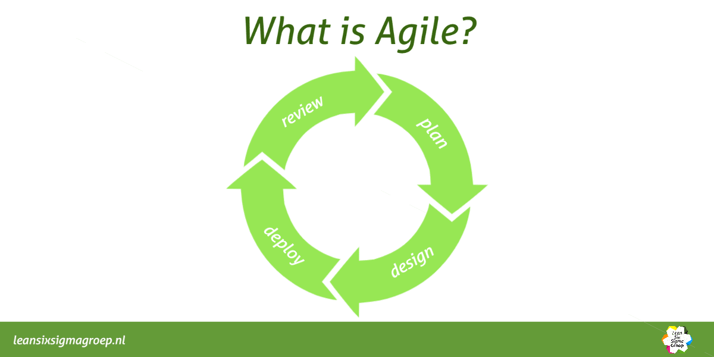

Agile Methodology: Navigating the Ever-Changing Landscape of Project Management
In today's dynamic and rapidly evolving business environment, traditional project management approaches often fall short. Enter Agile methodology, a flexible and adaptive framework that has revolutionized the way teams approach projects and product development.
What is Scrum?
Scrum is an agile project management framework designed to help teams develop and deliver high-quality products efficiently. Originally developed in the 1990s, Scrum has since found applications across various industries, not just in software development but also in marketing, finance, and even healthcare.
Benefits of Scrum
Scrum offers numerous advantages for organizations:
- Flexibility:Scrum adapts to changing requirements, making it well-suited for projects with evolving scopes.
- Customer-Centric:By involving the Product Owner and focusing on delivering value, Scrum ensures that the product aligns with customer needs.
- Transparency:Daily standups, Sprint Reviews, and other Scrum ceremonies keep everyone informed about project progress.
- Quality:Continuous testing and integration practices result in higher-quality products.
- Efficiency:Sprints encourage teams to work in short, focused bursts, reducing waste and increasing productivity.
What is Kanban?
test test2Kanban, which means "visual card" or "signboard" in Japanese, originated in the manufacturing sector at Toyota in the 1940s. It has since been adapted for various industries, including software development, marketing, and healthcare, to manage work processes and improve efficiency.
Benefits of Kanban
Kanban offers several advantages for teams and organizations:
- Flexibility:Kanban adapts well to changing priorities and allows for the easy introduction of new tasks.
- Efficiency:By limiting WIP and focusing on completing work before starting new tasks, Kanban reduces multitasking and improves productivity.
- TransparencyTeam members and stakeholders have a clear view of the work in progress, promoting transparency and collaboration.
- Customer Focus:Kanban emphasizes delivering value to the customer by focusing on the most important tasks first.
- Reduced Waste:By highlighting bottlenecks and inefficiencies, Kanban helps identify and eliminate waste in processes.